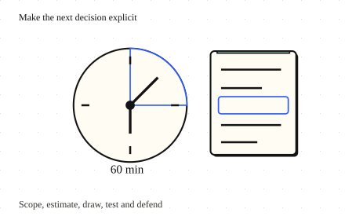

Lead the design · 6 minutes
How to lead a design interview
Use the hour to make decisions, test assumptions and invite useful disagreement.
Open this lesson
The prompt is only five words
You are asked to design a notification service. You could spend the hour drawing queues, but nobody has said whether messages are promotional emails or urgent medical alerts. Leading the discussion starts by turning a vague noun into a user journey and a few testable promises. State a provisional scope and ask which assumption would most change the design.
A flexible plan for sixty minutes
Spend the sixty minutes deliberately. Scope and numbers make the design testable; leave time for one failure and a trade-off you can defend. The clock only shows what went untouched.
Worked example: choose the deep question
Assume a 1 KB payload: the raw events add about 30 GB/day before replicas and delivery attempts. Extra app servers cannot erase a downstream provider limit. The backlog calculation points to admission, deadlines and recovery as the useful depth. It is a worked design example, not a traffic run.
The provider is the ceiling
- 30 million/day: 10 million people × 3 notifications. About 347/s average.
- 10 times burst: About 3,472/s arrive while the provider admits 2,000/s.
- Five-minute backlog: About 441,667 notifications wait. Decide deadlines and recovery before adding app servers.
Make the reasoning visible
Explain one simple design before alternatives. Tie every component to a requirement and invite pushback on a concrete choice. If a provider limit is unknown, give a plausible range, show which result changes the design and name the measurement needed. End with the key invariant, bottleneck, cost driver and one unresolved risk. Reasoning can be useful even when a reviewer chooses differently.
Make a claim testable
- State the promise: Name the user outcome and distinguish assumptions from measurements.
- Trace a failure: Walk one request and explain which invariant survives.
- Name the experiment: Measure the uncertain limit and say which result changes the design.
Key numbers
- Average notification rate
- ≈ 347/s. 30 million ÷ 86,400 seconds
- Burst rate
- ≈ 3,470/s. Average × assumed burst factor 10
- Five-minute backlog
- ≈ 442,000. (30 million ÷ 86,400 × 10 - 2,000)/s × 300 s; round at the end
Check your reasoning
Think through these questions before opening the lesson. In the game you can test the idea and compare your reasoning.
- Eight minutes in, the delivery deadline is still unknown. Which next step best resolves the queue policy?
- Why did you spend time on numbers before choosing services? Follow-up: your traffic estimate is wrong by ten times.
- The provider limit is unknown and could change the design. What supports the next decision?
- I disagree with your choice of deep dive. How do you respond? Follow-up: there are only fifteen minutes left.
- Ten minutes remain. Provider overload may violate delivery deadlines; three other topics are unexplored. How should you use the time?
The key point
Lead with a user promise, make assumptions testable and spend depth where it can change the design.
Practise this idea
- Easy
URL shortener
People paste a long web address and get back a short one. Millions of other people then tap that short link, so reading is almost everything. Keep every tap fast, and never lose a link.